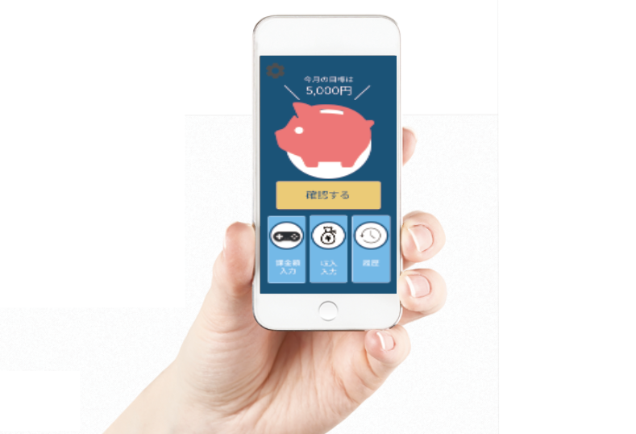
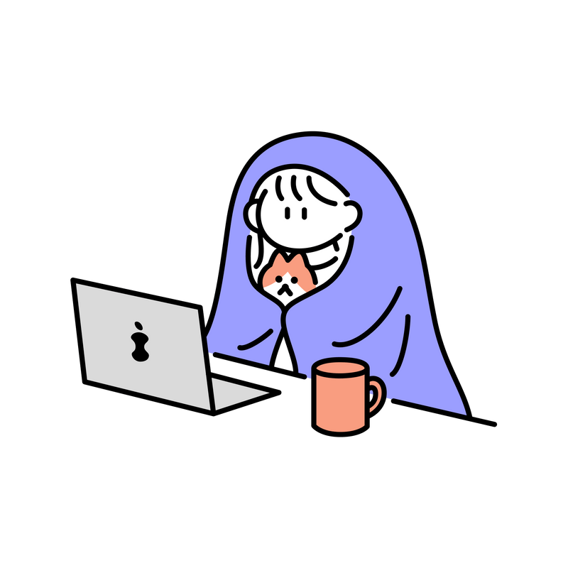
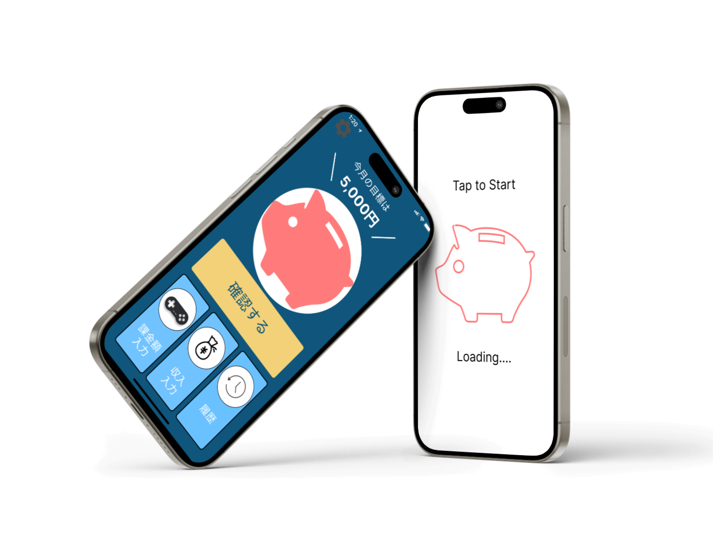
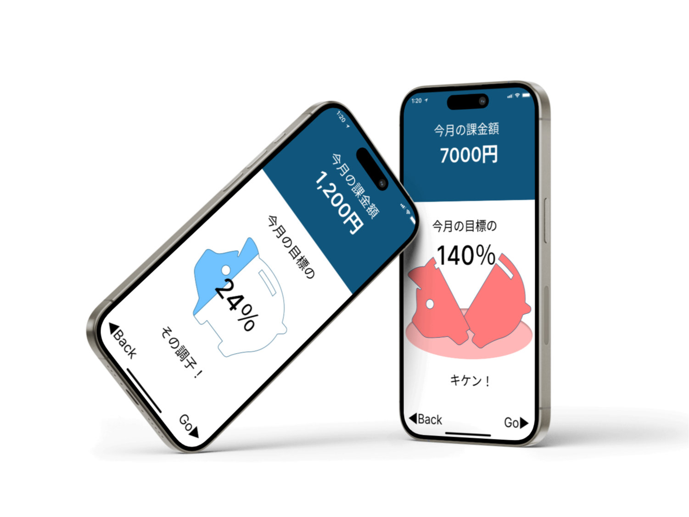
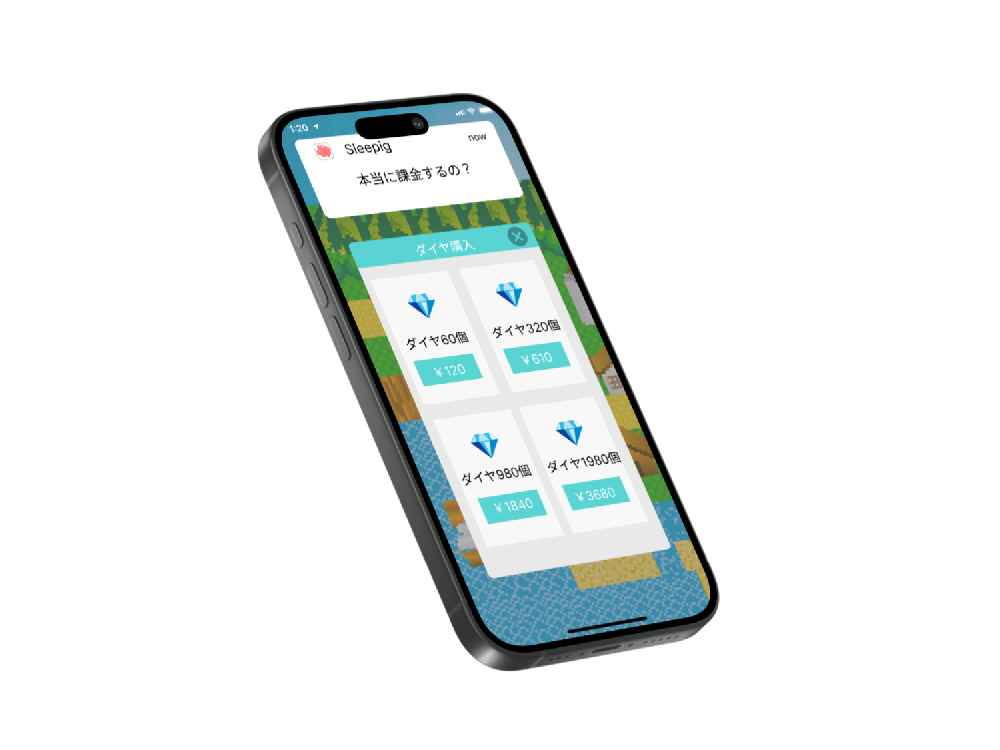
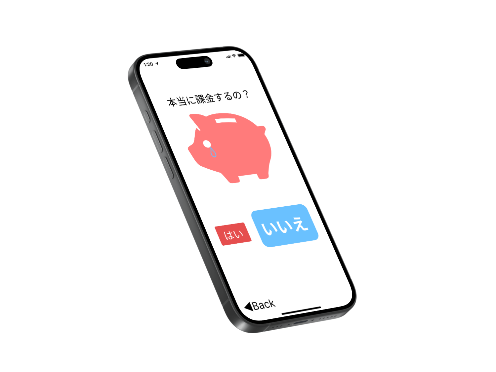

<!DOCTYPE html>
<html lang="ja"></html>
<head>
  <meta charset="UTF-8" />
  <title>sleepig</title>
  <link rel="stylesheet" href="css/zemi.css" />
</head>
<body>
  <main>
    <article>
      <div class="header">
        <a href="#top" class="font_change top_logo">sleepig🐖</a>
      </div>
      <section id="top">
        <p class="subtitle">購買意欲を抑制するアプリ</p>
        <h1 class="font_change title">sleepig</h1>
        <br />
        <p class="title_frigana">スリーピッグ</p>
        
      </section>

      <section>
        <p class="top_title">学生、貯金思い通りにできていますか。</p>
        <p class="top_section">
          今日、娯楽であるオンラインゲームの数は年々増加し、課金によりますます楽しみ方が多様化しています。<br />
          そんなゲームの課金欲を、抑制してくれるアプリが「Sleepig（スリーピッグ）」です！
        </p>
      </section>

      <section id="About" class="about">
        <h2><span class="font_change">sleepig</span>とは</h2>
        <div class="about">
          
          <p>
            <strong>「sleepig」</strong
            >は、人々の支出を抑制し、購買意欲を「寝かせる」システムです。
            <br />このソフトウェアでは、ゲームの課金に着目し、課金上限金額を定めることで、
            <br />課金をしたいという気持ちを寝かせることを目的としている。
            <br />それにより、ユーザが本当に欲している商品への購入につなげることができ、
            <br />自らが節約した金額分を異なる購買意欲に役立てることができる。
          </p>
        </div>
      </section>
      <section>
        <div class="about2">
          <p>
            <strong>「SleePig」</strong
            >では今月の自分自身の収入額を入力し、その中から課金額に当てたい金額を設定することで課金金額の管理が始まる。
            <br />今月の目標金額としてアプリに表示されることで、自分の課金状態を確認できるようになり、収入と支出のバランスを管理することが可能となる。
          </p>
          
        </div>
      </section>

      <h2 id="tokutyou"><span class="font_change">sleepig</span>の機能</h2>

      <section class="kinou">
        <h3>🐖<span class="font_change">課金の見える化</span></h3>
        <div class="about3">
          <p class="kinou_1">
            <br />
            ホーム画面の「確認する」ボタンをタップすると、今月の課金額が目標課金額の何パーセントを占めているか
            <br />をブタの貯金箱に表示される。
            <br />課金として利用されるとその目標金額が減っていき、その表示される金額が今月使用できる残りの金額となる。
          </p>
          
          <p class="kinou_1">
            これにより、どれだけ課金をしたかが一目で見て分かるようになり、達成への意識が高まると共に、
            <br />何となく課金をして翌朝後悔してしまうというようなケースも減らすことができる。
            <br />目標課金額を達成している場合はブタの貯金箱は元気だが、超過してしまった場合はブタの貯金箱は割れて
            <br />しまう仕組みになっている。
          </p>
        </div>
      </section>
      <section class="kakinn">
        <h3 id="migi">
          🐖🐖<span class="font_change">課金を抑制する通知</span>
        </h3>
        <div class="about4">
          <p class="kinou_2">
            これにより、どれだけ課金をしたかが一目で見て分かるようになり、達成への意識が高まると共に、
            <br />何となく課金をして翌朝後悔してしまうというようなケースも減らすことができる。
            <br />目標課金額を達成している場合はブタの貯金箱は元気だが、超過してしまった場合はブタの貯金箱は
            <br />割れてしまう仕組みになっている。
          </p>
          
          
          <p class="kinou_2">
            これにより、二重に課金の意志を問うようにして購買意欲を抑制することで、衝動的な課金を避けることができる。
            <br />最終確認の画面で「はい」を選択し、課金する場合にはブタの貯金箱が割れてしまい、
            <br />ユーザーに課金の罪悪感を印象づけることで、次回の課金の抑制に繋がるようになる。
          </p>
        </div>
      </section>
    </article>
  </main>
</body>
<footer id="saigo">
  <br />
  <p>共同ゼミ前期1班　SleePig</p>
</footer>
